Maio 2017
Patricia
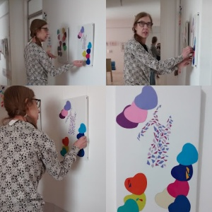Nara
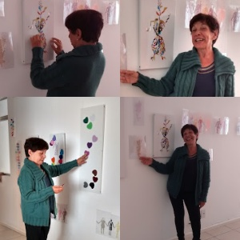Fevereiro 2017
Biancka
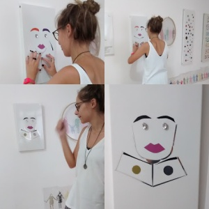Leni
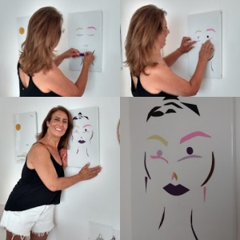Dezembro 2016
Aderbal e Daniela

Adalgisa
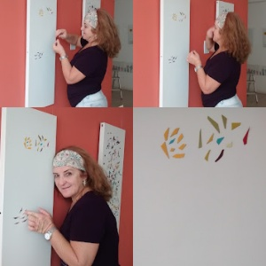Visita
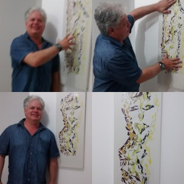 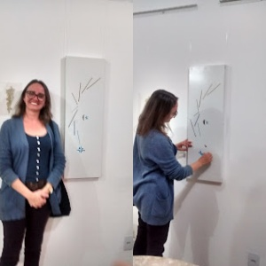Novembro 2016
Antonio, mãe e avó
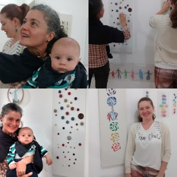Noeli
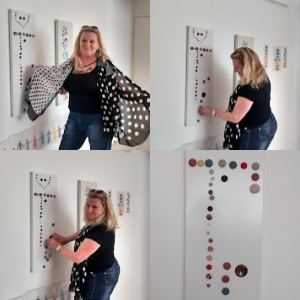Teresa
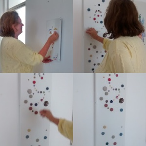Sandra e a Bruxa Desterrense
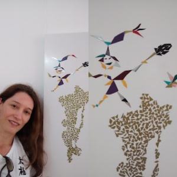Outubro 2016
Ocasião especial
No ateliê dia 28 de outubro 2016 as imagens foram criadas pelos convidados... Na Festa do meu Aniversario de 63 anos, que também significou oficialmente a apresentação da Galeria de Arte, Ateliê em Casa alguns dos convidados se sentiram confortáveis em contribuir com a retirada de alguns elementos de OBRAS PRONTAS para a criação de novas composições sempre com o meu consentimento e o convite para que interagissem com as OBRAS. Estavam disponíveis suportes para receberem criações.Estas foram as composições dos meus convidados.
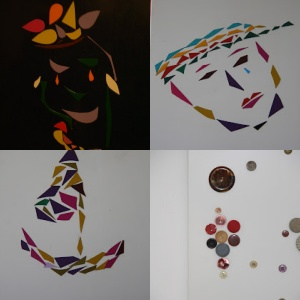 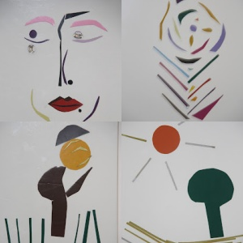Setembro 2016
Fabiana
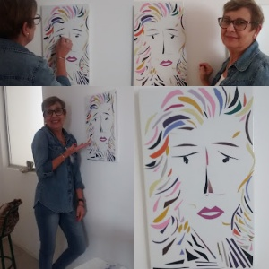Agosto 2016
João Pedro

Ilana
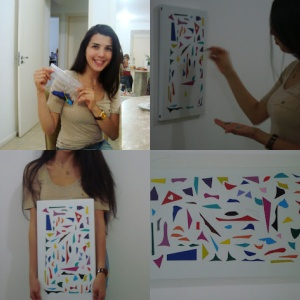Março 2014
Marlene
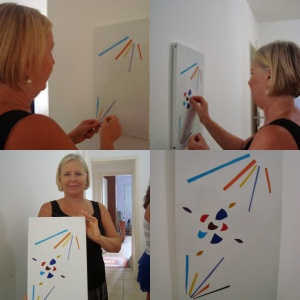Abdulia
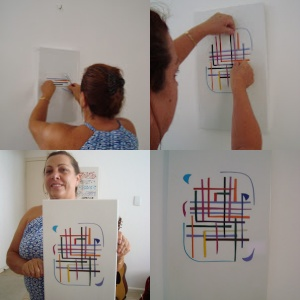Ivan
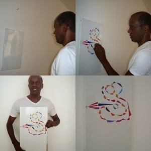Micheli
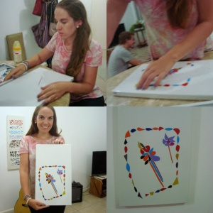Tatiana
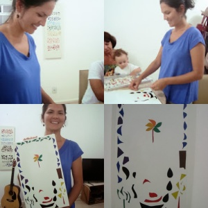Juliano
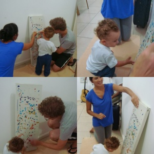Dezembro 2012
Laura
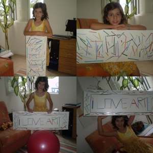Ingrid e Daiana

Março 2012
Ercilia
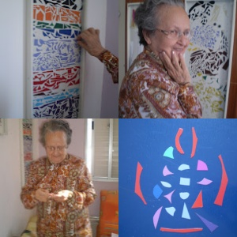Setembro 2011
Karla
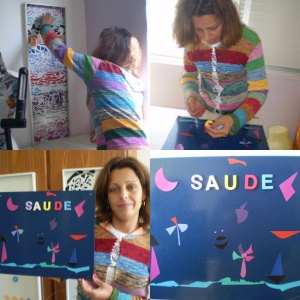Agosto 2011
Iris
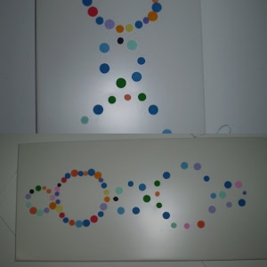Biancka
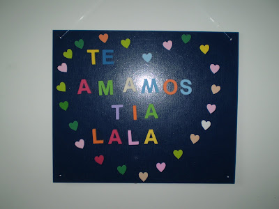Amanda
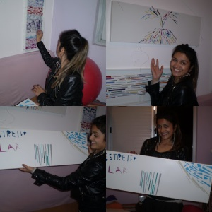Abril 2011
Diego
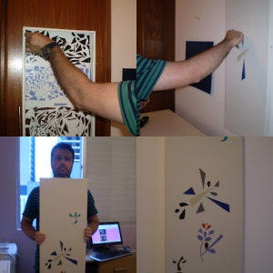Fernanda
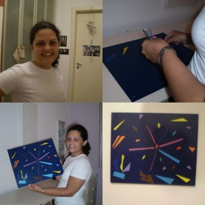Eliane
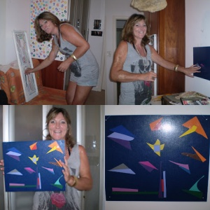Dezembro 2010
Manuela
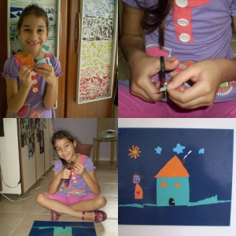Marli
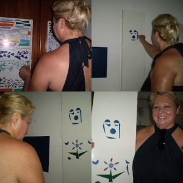Luciana
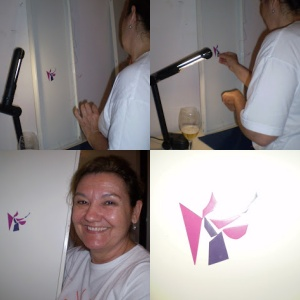Ana
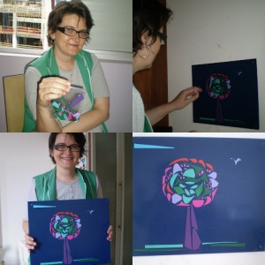Filha da Veterinaria
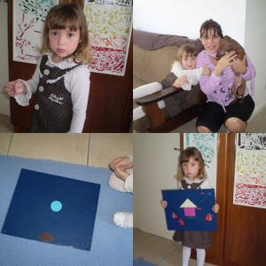Julho 2010
Noeli
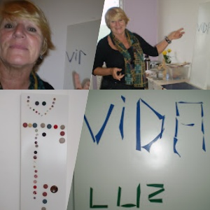Junho 2010
Rose
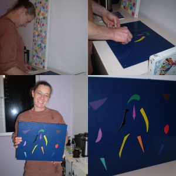Maio 2010
Loan
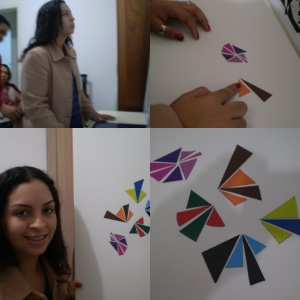Leda
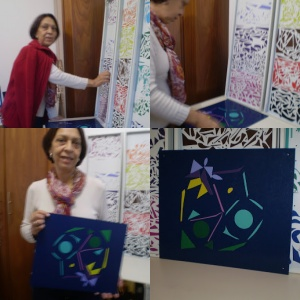Therezinha

Karen
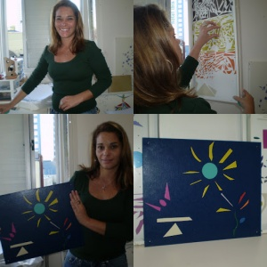Abril 2010
Fernando
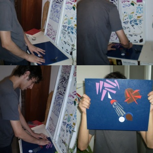Henrique
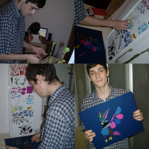Ramon
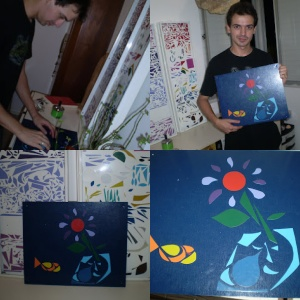Haide
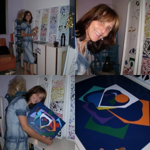Lucia
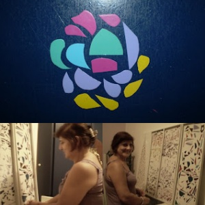Marcelo
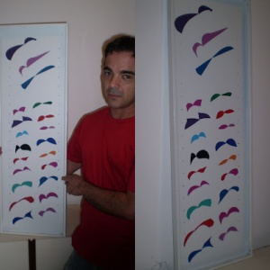Novembro 2009
Amigo